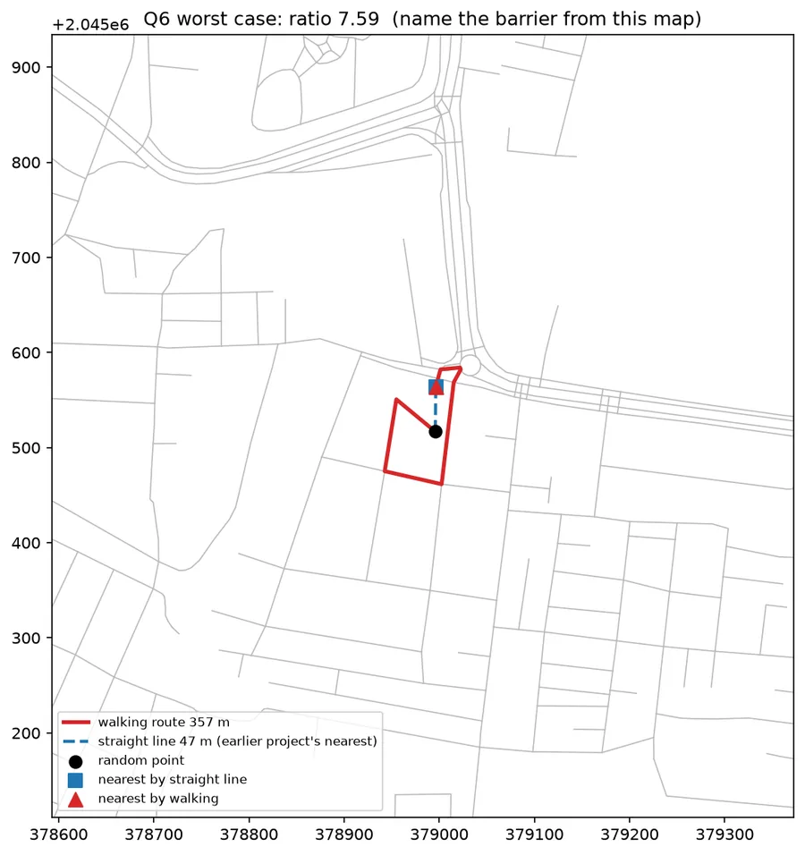

Case study / 02Pune, India · 2026
Web GIS · Central Pune · Semester 3
Who can’t walk
to healthcare?
A planning question turned into a full Web GIS: which residents of central Pune cannot reach a healthcare service on foot within 15 minutes, and how badly do straight-line buffers get the answer wrong?
See the results
01 / Situation
Straight lines
flatter the city.
Most “nearest hospital” maps draw a circle. People walk along streets, around railway lines and across busy junctions. This project rebuilds an earlier Leaflet + Overpass app as an analyst-grade Web GIS, and measures how much the circle misleads.
Shivajinagar–Peths
15 min · 1.2 km
in 18.7 km²
02 / Approach
From OSM data
to a public map.
- 01
Model the city in PostGIS
OpenStreetMap healthcare features, 12,835 buildings and a 13,134-node walking graph go into PostGIS in a metric CRS (EPSG:32643, UTM 43N) with GiST indexes, so every distance is in metres and every spatial query is index-backed.
- 02
Measure access on the street network
Walking isochrones and nearest-service distances use the OSMnx network at 4.8 km/h, and again at 3.6 km/h for older residents. Results are summarised on H3 hexagons at two resolutions, with building-footprint area as the population proxy.
- 03
Publish through open standards
GeoServer exposes WMS/WFS and a DEM coverage; pg_tileserv serves vector tiles and pg_featureserv serves OGC API – Features. All four services run in one Docker Compose stack.
- 04
Ship it without a server
A MapLibre GL JS client reads a single PMTiles file (built with tippecanoe) over HTTP range requests, so it can be hosted as a static site. Kubernetes manifests for a local kind cluster sit alongside.
03 / Results
What the circle
gets wrong.
27%
less area reachable on foot (13.7 km²) than straight-line buffers imply (18.7 km²)
11 / 30
random points whose nearest service is a different one by walking than by straight line
7.6×
worst case: 47 m as the crow flies, 357 m on foot (median ratio across points: 1.57×)
2.6% vs 0%
of proxy population beyond 15 minutes at H3 res. 9 — by network, versus by buffer
Slower walkers lose coverage. At 3.6 km/h (900 m), four res-9 hexagons drop out of coverage, including one holding about 21,700 m² of building footprint whose nearest service is 938 m away. Coverage lost: 0.9 percentage points at res. 9, 1.9 at res. 8.

04 / Data & method
Open data,
open services.
Every layer is reproducible from scripts in the repository: acquire and load, prepare the DEM, run the access analysis, publish to GeoServer, export to PMTiles.
- Data
- OpenStreetMap (ODbL) · SRTM 30 m DEM
- Population
- Building-footprint proxy (WorldPop optional)
- Spatial
- PostGIS · H3 · OSMnx · GeoPandas
- Services
- GeoServer · pg_tileserv · pg_featureserv
- Client
- MapLibre GL JS · PMTiles · Vite
05 / Limits & honesty
What it does
not claim.
Built and checked locally in November 2026. Stated plainly:
- Population is a proxy: percentages describe building footprint area, not people. WorldPop or ward census data would replace it.
- The study area is a bounding box over central Pune, not registered wards, so there is no ward-level aggregation yet.
- Facility completeness depends on OpenStreetMap tagging; some services carry no name tag at all.
- The GitHub Pages deployment and the Kubernetes run were still to be completed when this page was written, so there is no public URL yet.